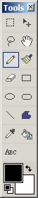

The Pencil Tool (Tools -->Pencil) is the basic of all the other tools. This tool allows for simple drawing upon the active layer with a line of size 1. A tool very similar to this is the Paint Brush which supports multiple sizes and fill patterns.
 The
star on the side of his cheek was produced using the Pencil Tool. Quick
and dirty drawing is a very typical use of the Pencil tool.
The
star on the side of his cheek was produced using the Pencil Tool. Quick
and dirty drawing is a very typical use of the Pencil tool.